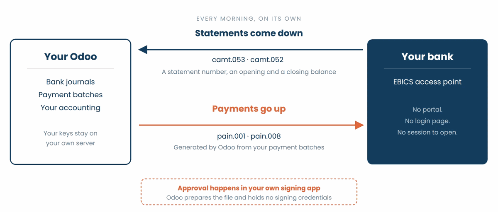
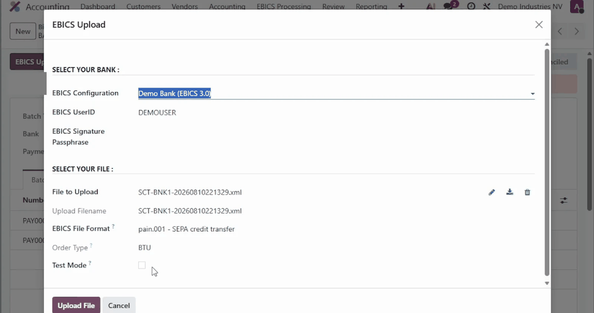

EBICS Banking Protocol
Exchange files directly with your banks from Odoo, with no portal and nobody logging in.
EBICS, the Electronic Banking Internet Communication Standard, is the channel European
banks open to companies that want their software to talk to the bank. Bank statements are
downloaded on a schedule and payment files are uploaded from Odoo, authenticated by your
own cryptographic keys instead of a login page.
This module implements that protocol in Odoo. It is developed and maintained by
Noviat, and follows each new version of Odoo, which matters when a bank connection has to
survive your next migration.
If you are still working out whether EBICS is the right channel for you, we explain it
without the jargon, with screen recordings of the flow in Odoo, on
noviat.com/ebics.

What you get
- Statements that arrive on their own. A scheduled task collects the files your bank
publishes, for every account, and processes them into bank statements.
- Payments that leave the same way. A payment batch or a payment order is uploaded to
the bank in the format the bank expects, without exporting a file and re-uploading it
somewhere else.
- Several companies, one connection. Keys are held per bank rather than per company:
when fifteen entities bank with the same institution, the bank sends a single daily file
carrying fifteen statements and the module puts each statement in the right company.
- No bank credentials in Odoo. The connection uses your own company keys, generated on
your side and kept on your server. Access to the EBICS configuration is a permission of
its own ('EBICS Manager'), separate from ordinary accounting rights.
- A test mode, where your bank offers one. French banks accept a test flag, so a file
can be submitted and validated before anything is switched to production. German and
Swiss banks generally do not: there the first payment is a real one, kept small and sent
to an account you control.
- A trace of every exchange. Each download and each upload is a record, with the file
it carried, the moment it happened and the user behind it.
EBICS 2.4, EBICS 2.5 and EBICS 3.0 are supported. EBICS 3.0, the current
specification since December 2022, names what is exchanged with BTF instead of the
country-specific order type codes of EBICS 2.x. Many banks still run 2.4 or 2.5 in parallel.
What travels over the link
- Coming in: camt.053 for the end of day statement, camt.052 for intraday movements
where the bank offers them, and national formats such as the French CFONB.
- Going out: pain.001 for credit transfers and pain.008 for direct debits, generated by
Odoo from your payment batches.
We do not process MT940 statements: the format carries bank and country specific variations,
and the Odoo community stopped maintaining a general parser for it after Odoo 10. Where a
bank publishes camt.053 alongside it, which is now the usual case, that is the format to use.
Which banks
Any bank that publishes an EBICS access point can be connected. The standard is maintained by
EBICS SC, a company held by the German, French, Swiss and Austrian banking bodies
(DK, CFONB, SIX and PSA), and it is the standard corporate channel in those countries.
To check a specific bank before you start, joonis publishes a public directory at
joonis.de/en/fintech/banks. Enter a BIC and it
returns the SEPA services the bank offers, the EBICS versions it supports and its Host-ID.
A bank missing from that directory is not a no: it is joonis' own list, not an official
register. Ask your bank whether it publishes an EBICS access point.
What it costs
This module is free software, published under LGPL-3. There is no licence fee, no
subscription and no per-connection charge from Noviat.
It does however rely on the fintech library from
joonis, and that library requires a commercial licence for production use: as soon as
you upload SEPA files with more than five transactions, retrieve statements older than the
last three days, or use the distributed signature. The licence is contracted directly with
joonis, not with Noviat.
joonis charges a one-off setup fee plus a monthly fee per EBICS user id. Current pricing is
published on
joonis.de.
Your bank may also charge a subscription for the EBICS channel itself. It varies from one
bank to another and is billed by the bank, separately from anything on the Odoo side.
Requirements
The module depends on two Python libraries:
Because the connection needs a Python library and your key files on the server, it runs on
Odoo.sh or on an on-premise installation.
The EBICS test mode for uploads requires fintech 4.3.4 or higher for EBICS 2.x and fintech
7.2.7 or higher for EBICS 3.0. SWIFT 3SKey support requires fintech 6.4 or higher, and the signature passphrase
fintech 7.3.1 or higher.
Fintech licence
With a fintech licence, add its parameters to the [options] section of the Odoo server
configuration file:
- fintech_register_name: the name of the licensee;
- fintech_register_keycode: the keycode of the licensed version.
Example:
; fintech
fintech_register_name = MyCompany
fintech_register_keycode = AB1CD-E2FG-3H-IJ4K-5L
Companion modules
From this repository:
- EBICS - Odoo Enterprise Integration (account_ebics_oe): required on Odoo
Enterprise; installed automatically.
- EBICS - Bank Statement Import (OCA) (account_ebics_oca_statement_import):
matches the statements processed with the OCA statement import to the right bank
journal; installed automatically with account_statement_import_file.
- EBICS - Scheduled File Import (account_ebics_batch): downloads and processes the
files of every connection on a schedule.
- EBICS - Batch Payments (Odoo Enterprise) (account_ebics_batch_payment): uploads
the batch payments of the Odoo Enterprise account_batch_payment module.
- EBICS - Payment Orders (OCA) (account_ebics_payment_order): uploads the payment
orders of the OCA account_payment_order module
(OCA/bank-payment).
To process the downloaded statements, install the module of each format you receive:
- camt.053, camt.052 and camt.054: account_statement_import_camt
(OCA/bank-statement-import). For
camt.053, the Odoo Enterprise account_bank_statement_import_camt works too.
- French CFONB: account_statement_import_fr_cfonb
(OCA/l10n-france).
Recommended with several financial journals: account_usability
(OCA/account-financial-tools), which adds
accounting menus such as a list of all bank statements, including those downloaded by the
scheduled import.
Getting your bank online
The configuration on the Odoo side takes fifteen to thirty minutes. What sets the pace of a
project is the bank, and it is almost never for a technical reason:
- The bank opens the access. You receive the host ID, the address of the access point,
your partner and user identifiers, and a letter carrying the hash values of the bank's keys.
- INI and HIA. Odoo generates your key pairs for signature, authentication and encryption,
sends the public keys to the bank and produces the initialisation letters, which you print,
sign and send. The bank compares them by hand with the keys it received online.
- HPB. Once the bank has activated your access, you retrieve its public keys and compare
their hash values with the letter it sent you. That comparison is what makes the channel
trustworthy.
- The first exchange. Statements come down first. Payments follow, as a test file where
the bank supports the test flag, otherwise as a real transfer of a small amount.
Count in weeks per bank rather than days, and start the contract and the paperwork early.
Configuration
The menus are those of Odoo Enterprise; on Odoo Community, the application is called
Invoicing instead of Accounting.
Who may configure. In Settings > Users, with the developer mode active, tick
EBICS Manager in the Technical section of the users who maintain the EBICS
configuration.
File formats. In Accounting > Configuration > EBICS > EBICS File Formats, check that the
formats you exchange with your banks are defined; the common ones are created at
installation. A missing format can be reported on
GitHub.
A download format can carry a Download Process Method, run by the Process button of a
downloaded file: camt.053, camt.052, camt.054 and cfonb120. Each needs the
module of its format (see Companion modules); Odoo tells you which one when it is missing.
Bank connections. In Accounting > Configuration > EBICS > EBICS Configuration, create one
connection per bank contract, with the identifiers your bank sent you.

Usage
The EBICS Processing menu, in the top bar of the Accounting application, lists the
downloaded and uploaded files and offers manual downloads and uploads.
Downloaded files are processed into bank statements. Uploads are launched from the payment
batch or the payment order, with the format set in the configuration: on the payment
mode for a payment order, on the journal's payment method for a batch payment.

Diagnostics
To diagnose the connection with your bank, add this line to the Odoo server configuration
file:
log_handler = fintech.ebics:DEBUG
EBICS return codes
During an upload or a download, your bank may return an error code, for example:
EBICS Functional Error:
EBICS_NO_DOWNLOAD_DATA_AVAILABLE (code: 90005)
The codes are explained on ebics.org and in the doc folder of
this module (EBICS_Annex1_ReturnCodes).
Electronic Distributed Signature (EDS)
Where your bank supports EBICS T, Odoo prepares the file and holds no signing credentials
at all: the payment is approved in your own signing application, which is what a segregation
of duties policy usually demands. Where it does not, which happens with German and Swiss
banks, the signing key sits on your Odoo server, and you can protect it with a separate
signature passphrase that is never stored and is asked for every signed transaction.
External signing apps include BankingVEU
(Android,
iOS).
Roadmap
- Import externally generated keys and certificates (today only the 3SKey signature
certificate).
- Support the SWIFT 3SKey signing JavaScript library
(SConnect).
Issues and pull requests are welcome on
GitHub.
Credits
This module is developed and maintained by Noviat, Odoo
integrator in Belgium, specialised in accounting and finance since 2009.
We implement it, we configure the connection with your banks and we support you through the
first cycles. If you want help getting a bank online, tell us which banks you use:
https://www.noviat.com/ebics